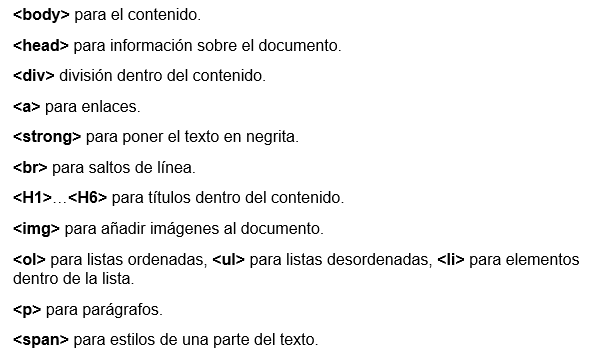

Etiquetas basicas de HTML
Antes de indicar cuales son las etiquetas basicas de html, primero explicaremos que es una etiqueta. las etiquetas son son fragmentos de código que permiten crear elementos HTML, estructuras básicas del lenguaje de programación HTML en el que se escriben las páginas web porque es el que entienden los navegadores. El formato de una etiqueta HTML es un bloque de texto encerrado entre corchetes angulares < >, y cada elemento HTML tiene una etiqueta de inicio del tipo <etiqueta> y suele terminar con una etiqueta de cierre que lleva una barra inclinada al principio </etiqueta>". De acuerdo a esto ya indicaremos cuales son las etiquetas básicas, las cuales son las más usadas y con estas podremos crear cualquier documento en HTML.

Idevik, X. (2021). ¿Qué es una etiqueta HTML y cuáles son las más importantes?. Recuperado de https://www.iebschool.com/blog/que-es-etiqueta-html-analitica-usabilidad/